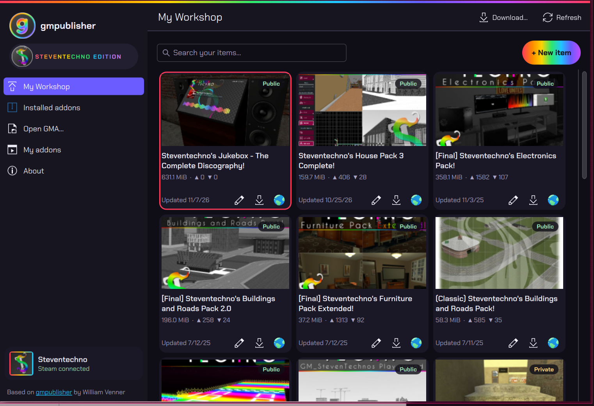
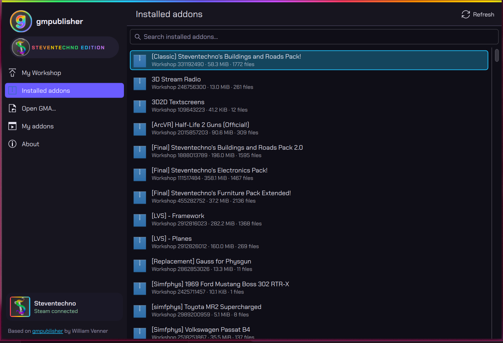

My Workshop
Opens on a grid of every addon you've published, with its preview, visibility, size, votes and last update. Search it, open items in Steam or your browser.
A Linux-only fork of William Venner's gmpublisher
Create, update, download and unpack Workshop addons on SteamOS, Bazzite and
any Linux desktop. Rebuilt from scratch in Rust and KDE Kirigami, so it runs on
the libraries your Plasma desktop already has. No sudo, no Distrobox,
no unlocking the read-only system.
Version 1.0.0 · x86_64 Linux · Free and open source under GPL-3.0

gmpublisher was created by William Venner, and all credit for the original goes to him and its contributors. This edition is an independent fork, maintained by Steventechno, that targets Linux only. It is not affiliated with or supported by the original project, so please report problems with it here, not upstream.
The original is a Tauri app that needs WebKitGTK. On read-only systems like SteamOS and Bazzite you can't install that without unlocking the system or running a container. This edition swaps the web UI for native Qt 6 and Kirigami, which Plasma already ships, so it simply runs.
Looking for Windows or macOS? Use the original gmpublisher.
Features
Browse and search every addon Garry's Mod has installed, with its Workshop ID, size and file count. Pick one to look inside its GMA and extract it wherever you like.
The sidebar shows who you're signed in as and whether Steam is connected, so you always know when Workshop features are ready.

Opens on a grid of every addon you've published, with its preview, visibility, size, votes and last update. Search it, open items in Steam or your browser.
New item packs an addon folder into a GMA and uploads it. New items start out Private, so nothing goes public until you choose to.
The pencil button changes the title, type, tags, visibility, preview and BBCode description. Upload new files with change notes, or keep the ones already there.
Paste any Workshop ID or link, then save the .gma or extract it straight into a new folder. Nothing in the target folder is ever overwritten.
Keep your addon folders in My addons, edit each addon.json, see exactly which files will be packed, then pack or publish.
Open a .gma from anywhere, look at what's inside and extract it wherever you like. Works without Steam running.
Install
gmpublisher talks to the Steam client already running on your computer, the same way a game does. That's how it can see your Workshop items and upload as you. So the one rule is: Steam must be open and signed in for Workshop features. Browsing, packing and extracting GMAs work without it.
Steam Deck, Legion Go, ROG Ally or any PC running them.
Nothing is installed into the system, so it survives SteamOS updates and needs no steamos-readonly disable.
Fedora, Arch, Debian, Ubuntu, openSUSE and friends on x86_64.
kf6-kirigami on Fedora or kirigami on Arch. The Flatpak brings its own and doesn't need this.
The tarball adds a menu entry, opens .gma files, and gives Dolphin right-click actions to extract a GMA or open a folder as an addon.
| File | Best for |
|---|---|
gmpublisher-qt-x86_64.AppImage |
SteamOS and Bazzite (recommended). A single file that uses your desktop's Qt 6 and Kirigami. |
gmpublisher-qt-x86_64.flatpak |
If you prefer Flatpak. It brings its own KDE runtime from Flathub. |
gmpublisher-qt_linux_x86_64.tar.gz |
A per-user install with a menu entry and Dolphin right-click actions. No root needed. |
chmod +x gmpublisher-qt-x86_64.AppImage
./gmpublisher-qt-x86_64.AppImageflatpak install --user gmpublisher-qt-x86_64.flatpak
flatpak run io.github.ffseestevanli_oss.gmpublishertar -xzf gmpublisher-qt_linux_x86_64.tar.gz
./gmpublisher-qt/install.sh
# remove it later with:
./gmpublisher-qt/install.sh --uninstallCommand line
The same binary has a small command line for packing and unpacking without opening the window.
gmpublisher-qt # open the app
gmpublisher-qt FILE.gma # open a GMA in the app
gmpublisher-qt FOLDER # open an addon folder to edit, pack or publish
gmpublisher-qt list FILE.gma # list the files in a GMA
gmpublisher-qt extract FILE.gma [DIR] # extract a GMA
gmpublisher-qt pack FOLDER [OUT.gma] # pack a folder using its addon.jsonTroubleshooting
Start the Steam client and sign in, then give gmpublisher a few seconds. On SteamOS that means opening Steam from the Desktop Mode app menu. Everything that doesn't touch the Workshop keeps working while it waits.
Some systems don't have FUSE 2. Run it with --appimage-extract-and-run instead:
./gmpublisher-qt-x86_64.AppImage --appimage-extract-and-runReaching Steam from inside the Flatpak sandbox is the least tested part of this release. Use the AppImage for Workshop work and please open an issue.
Add Flathub for your user first, then install again:
flatpak remote-add --user --if-not-exists flathub https://dl.flathub.org/repo/flathub.flatpakrepoIt isn't designed for Game Mode. Switch to Desktop Mode, where you have a mouse, keyboard and file manager for picking addon folders.
No, this edition is Linux only. For other systems use William Venner's original gmpublisher.
No. New items start out Private. Updates keep the item's current visibility unless you change it in the edit dialog.